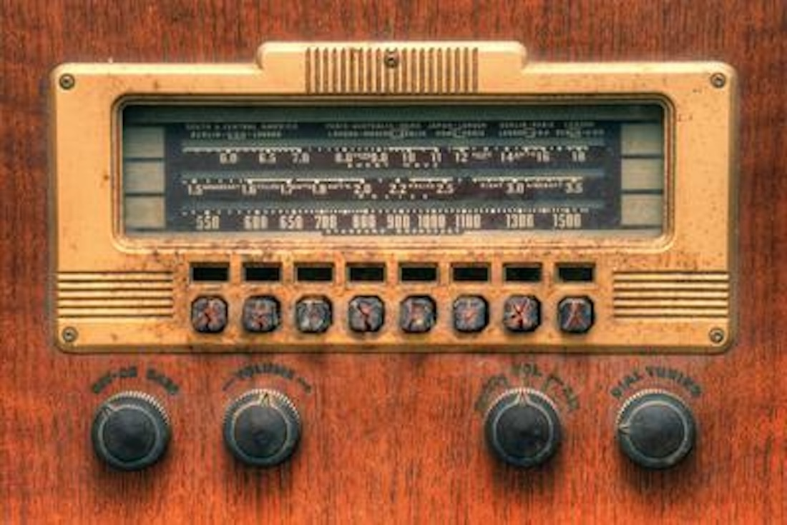

A weekly chart that ranks the most popular songs in the United States based on sales, radio airplay, and online streaming.
Week of December 12,
#1. George Michael - "Faith"
#2. Belinda Carlisle - "Heaven Is A Place On Earth"
#3. Richard Marx - "Should've Known Better"
#4. Bill Medley & Jennifer Warnes - "(I've Had) The Time Of My Life"
#5. Whitesnake - "Is This Love"
#6. Debbie Gibson - "Shake Your Love".
#7. Whitney Houston - "So Emotional"
#8. Sting - "We'll Be Together"
#9. Jody Watley - "Don't You Want Me"
#10. George Harrison - "Got My Mind Set On You"
1987
